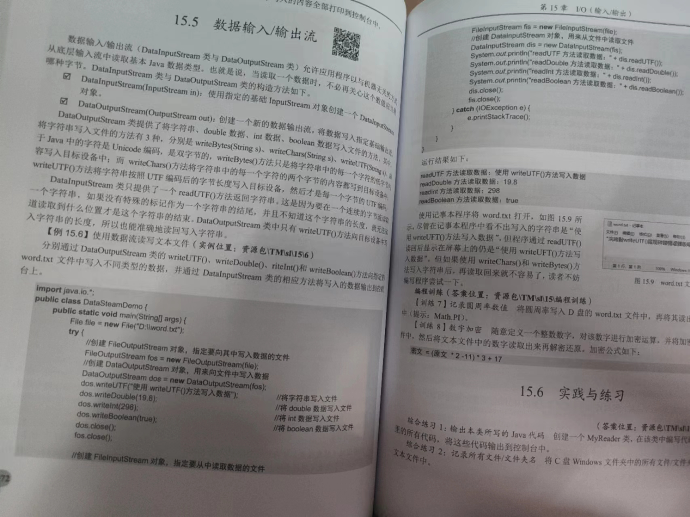
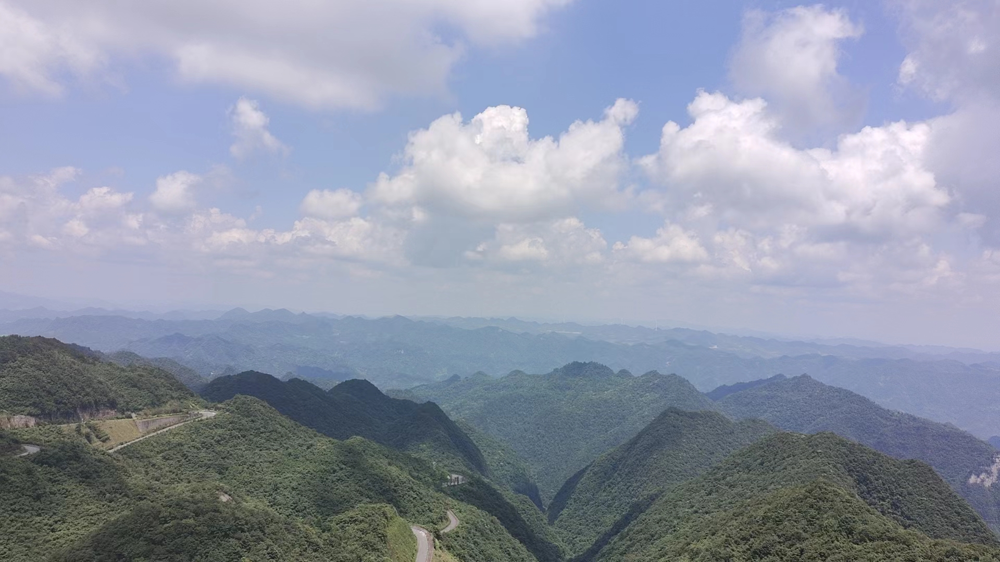
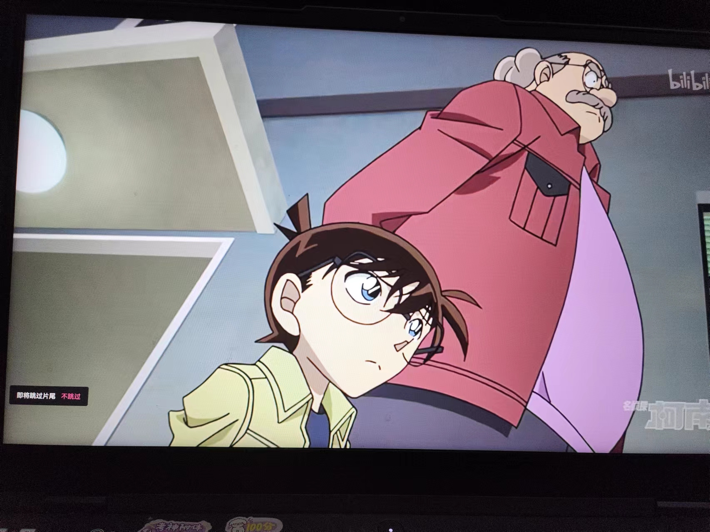
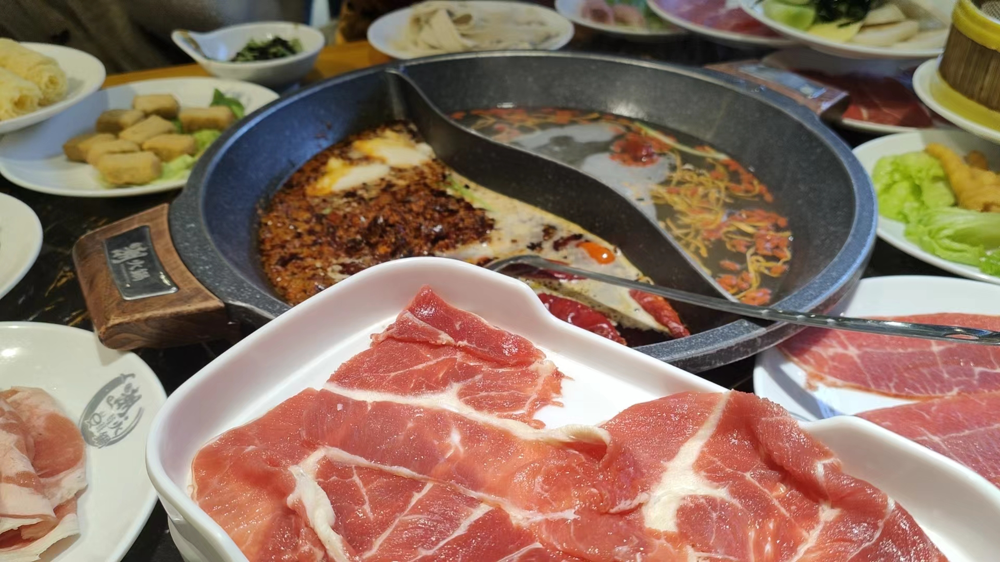

我的爱好

阅读对我而言，既是放松的港湾，也是知识的宝库。
每当我翻开一本书，就仿佛踏上了一段奇妙的旅程。
在文字的海洋中遨游，我忘却了日常的烦恼，全身心投入到故事与知识的世界中。
阅读不仅丰富了我的内心世界，还拓宽了我的视野，让我更加深刻地理解世界和自己。
无论身处何地，阅读都是我随身携带的良伴，陪伴我度过每一个静谧的时光。

旅行对我来说，是一场无尽的冒险，每一次踏上新的土地都如同打开一本未知的书籍。
我热衷于深入世界各地的风景，感受每一片土地的独特韵味，领略不同文化的独特魅力。
每一次旅行都是对自我认知的拓展，让我更加珍视生活的多样性。
在旅途中，我体验了不同的生活方式，这些宝贵的经历都成为了我人生中宝贵的财富。
旅行，让我不断探索，不断成长，永远充满好奇与期待。

看番是我生活中不可或缺的一部分，我深深地热爱着每一部动漫作品。
它们不仅带给我视觉和听觉的享受，更让我沉浸在精彩的故事和角色中。
我定期追番，享受每一次与动漫世界的邂逅，沉浸在故事的情节和角色的情感中。
看番让我感受到了不同的情感和思考，也使我更加珍惜生活的多样性。
它是我追求精神满足和心灵寄托的重要方式，让我在忙碌的生活中找到了一片宁静的天地。

美食对我来说，是一种无法抗拒的诱惑。
虽然我对烹饪的技艺并不热衷，但我却对品尝各种美食抱有极大的热情。
我热衷于探索各地的特色美食，品尝不同的口味和风味，享受每一口带来的愉悦和满足。
无论是精致的甜点、香辣的川菜，还是鲜美的海鲜，我都愿意尝试，让味蕾尽情享受这场美食的盛宴。
美食是我生活中不可或缺的一部分，它带给我无尽的快乐和享受。